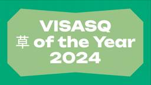

VISASQ Dev Blog
https://tech.visasq.com/
ビザスク開発ブログ
フィード

草オブ・ザ・イヤーを開催して表彰した話
VISASQ Dev Blog
Slackの「草文化」を活用した社内コミュニケーション活性化の取り組みをご紹介。Python初心者でも実装できた草リアクション分析と、Google Vidsを使った表彰式の実践事例を解説します。
1日前

Vue Fes Japan 2024 にゴールドスポンサーとして参加しました！
VISASQ Dev Blog
CEO室 コミュニケーションデザイナーのmacoです。 開発チームのメンバーと一緒に、Vue Fes Japan 2024 に参加しましたのでレポートします。 VueFes とは Vue Fes Japanは、JavaScriptフレームワークの代表格であるVue.jsに関する、日本最大級のカンファレンス。 Vue.js にまつわる知見をセッションから得たり、他の開発者と交流できる場となっています。 今年はスタッフ含め国内外のVue.jsユーザー700名が一堂に会しました！ ビザスクでは、プロダクトにVueやNuxtを使用しており、実際に業務で使用している開発メンバーと共に参加しました。 （私…
2ヶ月前
ようやくできたぜNuxtアップデート
VISASQ Dev Blog
AutoImportの型チェックが効くようになった TypedPageによりページ遷移先の補完が出るようになった 型のみのimportの場合はtype importが必須になった ローディングインジケーター ページ遷移時のインジケーター Linterなど おわりに こんにちは！ クライアント開発チームの山中です。 ビザスクでは法人クライアント様がビザスクとやり取りするためのアプリケーションである、クライアントポータルを提供しています。 このクライアントポータルは昨年10月にリニューアルをして、vue2からNuxt3.2上で動くアプリケーションに作り変えました。 その時のビザスクエアの記事がこち…
2ヶ月前
Storybookをもっと活用したい
VISASQ Dev Blog
はじめに 背景と課題 今回やったこと コンポーネントの整備 セマンティックトークンを見える化 実装上の制限 今後の課題 最後に はじめに こんにちは、クライアント開発チームの石岡です。やっと暑さが落ち着いてサウナに入って外気浴も気持ちいい季節になり始めて嬉しさを感じています。 私が所属するチームが開発しているクライアントポータルというプロダクトでは、フロントエンド開発の技術にnuxt, vue3 デザイナーとの連携ツールにstorybookを導入しています。今回は、クライアントポータルの開発プロセスで、デザイン側とより連携しやすく開発しやすくするためにどうstorybookを活用していくかを考…
2ヶ月前
コーディングルール物語
VISASQ Dev Blog
はじめに 本記事でお話すること 声があがるまでの経緯 アプリケーションの背景 課題 ルール策定、ドキュメント作成へ コーディングルール コーディングスタイル その他 運用中 おわりに はじめに こんにちは！フルサポート開発チーム、エンジニアの下山です。 最近は猛暑のせいでバイクに乗る回数が極端に減っています。早くライダーに優しい気温の季節になってほしいです🥵 本記事でお話すること 今回は、フルサポート開発チームがメインで取り扱う管理画面※1のコーディングルールについてお話します。 ただし、コーディングルールの詳細については触れません。 では何の話をするかというと、そのコーディングルールができる…
4ヶ月前
チームビルディングにおススメのゲーム2選
VISASQ Dev Blog
お盆はいかがお過ごしですか？検索チームの tanker です。 (ビザスクでは制度としてのお盆休みは無いのですが、任意のタイミングで5日連続で休みが取れるのでずらして取得する方が多いです) 検索チームでは今春に新しい方が2名も入ってきたので、今回はチームビルディング強めなオフサイトを実施しました。 ビザスクの検索チームのことをもっと知りたければ以下の記事も併せてどうぞ！ tech.visasq.com tech.visasq.com チームビルディングで使ったゲーム 私自身がボードゲームが好きなこともあり、人事チームが買っていたオフィスの備品のゲームを借りてチームビルディングを行いました。 お…
4ヶ月前
Renovateを導入してterraform providerを自動更新する
VISASQ Dev Blog
インフラを管理する際にTerraform Providerのアップデートが面倒になって放置していませんか？ それ、Renovateで解決できます。 こんにちは！DPEチームの酒井です！ 弊社ではインフラの管理にTerraformを利用していますが、Providerのバージョンアップデートは後回しにされていました。 そこで導入したものが、依存関係を自動更新してくれるRenovateになります。 Renovateとは？ docs.renovatebot.com Renovateはリポジトリの依存関係を自動的に検出し、更新を効率的に管理するツールです。 機能としては、最新の依存関係に関するPRの自動…
5ヶ月前
中途入社1ヶ月エンジニアがビジネス職研修を受けて得られたこと
VISASQ Dev Blog
はじめに こんにちは！初めまして。2024年6月にビザスクに中途入社し、検索チームのエンジニアをしている寺田です。入社してから早くも2ヶ月が経過しました。この期間にも様々な業務を経験し、学びを得ています。その中で今回は ビジネス職向けの研修 を3週間程で受講する機会がありましたので、そのことについてお話ししたいと思います。 私自身と同じ境遇である「社内サービスを開発しているエンジニア」や「エンジニアと円滑にコミュニケーションをしたいと考えるビジネス職の方」、「研修等を企画する人事部の方」等の方々に参考になれば幸いです。 ビジネス職( RM )研修について RM(リサーチマネージャ)とは? ビザ…
5ヶ月前
FastAPIの巨人の肩について調べました
VISASQ Dev Blog
こんにちは、暑い日が続きますね。 こんな日はライムがキリッと効いた一杯でキメたいところです、エキスパート/lite開発の下山です。 今回は自身が担当しているサービスのバックエンドであるFastAPIについてお話ししたいと思います。 FastAPIってなに FastAPI は、Pythonの標準である型ヒントに基づいてPython 以降でAPI を構築するための、モダンで、高速(高パフォーマンス)な、Web フレームワークです。 （fastAPI 公式ドキュメント） はい。 型ヒントあるし、モダンで高速なんですね。 ところでページ下部になんか書いてました。 FastAPI は巨人の肩の上に立って…
5ヶ月前
Elasticsearch と On Your Data を使った RAG の実現
VISASQ Dev Blog
「GPT-4o」が5月にリリースされて、この記事を書く準備をしていたら、数日前に「GPT-4o mini」がリリースされて、「マジ！？」 となっている今日この頃 リモート勤務と電気代の天秤に絶賛悩んでいる 検索チームの tanker です。 (一応補足すると、会社から一律 5千円のリモート勤務手当が出ています) Azure OpenAI の On Your Data で Elasticsearch が利用可能に Azure OpenAI で RAG (※) を実現するための機能として On Your Data があります。 (※ 信頼性の高い内部のデータを使って回答を生成する仕組み) 従来は、…
5ヶ月前
Dependabotを導入してライブラリの脆弱性対策を自動化する
VISASQ Dev Blog
こんにちは！クライアント開発チームの安野です。 クライアント開発チームでは、クライアントポータルという to B 向けのサービス開発を担当しており、私はそこでフロントエンド・バックエンドの開発に携わっています。 クライアントポータルの内容はこちらからも確認できるので、ご興味があれば是非ご一読いただけますと幸いです！ square.visasq.com そんなクライアント開発チームですが、この度、 Dependabot というライブラリの脆弱性管理ツールを導入しました。 今回は導入にあたって調査した Dependabot について共有できればと思います。 はじめに ソフトウェア開発において、外部…
5ヶ月前
Cloud SQL for MySQL 5.7 のデータを Cloud SQL for MySQL 8.x へ DMS を利用して移行してみた
VISASQ Dev Blog
はじめに こんにちは！DPE（Developer Productivity Engineering）チームの高畑です。 最近カーオーディオにハマっていて、スピーカーを変えたり DSP アンプを導入したりとオーディオの沼に腰あたりまで浸かってしまいました。 スピーカーケーブルをちょっと良いやつに変えたりしてみたんですが、正直違いが分かっていないので頭まで浸かるのはまだ先のようです。 現在、ビザスクでは遅ればせながら MySQL 5.7 から MySQL 8.x へアップグレードするためのプロジェクトが進行しており、既存のデータを移行するため諸々の検証を行なっていました。 検証を進めるにあたり、デ…
5ヶ月前
CleanShot Xのトライアルから導入までの取り組みと工夫
VISASQ Dev Blog
CleanShot Xのら導入プロセスを詳しく解説。トライアルから導入までの具体的な取り組みや工夫を共有します
6ヶ月前
Google Cloud コスト適正化への道〜Cloud Run編〜
VISASQ Dev Blog
暑くなってくるとだんだん食欲がなくなってきませんか？今年もそんな季節となりました。 今年の夏は北海道に行く予定です、私は本当にやるぞ。DPEチームの嶺岸です。 ところで、パブリッククラウド高くないですか？ 使った分だけお支払いいただきます、この売り文句を聞いて高くなると思うか、安くなると思うか、その感覚は人それぞれかと思います。しかし覚えておいて欲しい。使えば使っただけ支払わなければならないということを。 弊社のGoogle Cloud、高くない？ 私のコスト感覚を一言で言うと、「なんとなく」です。身も蓋もない。 この費用……なんか、変？何が高いのかな……？（裏声） という感じでなんとなくGo…
6ヶ月前
gunicornのパフォーマンスチューニング
VISASQ Dev Blog
はじめに 前提 公式ドキュメントに書いてあること 検証 リバースエンジニアリング 検証 2 まとめ はじめに gunicorn の設定難しくないですか？ 弊社のアプリケーションサーバーの一部は Django + gunicorn で構成されています。 このサーバーでレイテンシが高いリクエストの処理中に他のリクエストのレイテンシが増加する事象が発生しました。 結論、この問題は gunicorn のワーカー、スレッドの設定を変更することで解決しました。 今回はその解決の過程で調べたことを紹介します。 前提 gunicorn 22.0.0 gunicorn のワーカーは gthread 公式ドキュメ…
6ヶ月前
ビザスク×レバレジーズで技術勉強会を開催しました！
VISASQ Dev Blog
はじめに ビザスクの DevHR を担当している千川とフルサポート開発エンジニアの下山です。 このたび 3/13 にレバレジーズ社と、設計をテーマに合同勉強会を開催しました。 また、レバレジーズ社の勤務体制が出社メインで、弊社ビザスクの勤務体制がフルリモートメインでしたためオフラインとオンラインのハイブリッド形式で実施いたしました。 この記事では、弊社のエンジニアの発表内容及び当日の様子を簡単にご紹介したいと思います。 発表内容 弊社からは、3人のメンバーが発表しました。 「クライアントポータルをリニューアルした話」 登壇者：山中（クライアント開発チーム） ビザスクのプロダクトであるクライアン…
8ヶ月前
成長を続けるビザスクに入社してみて
VISASQ Dev Blog
自己紹介 初めまして、ビザスクに2023年10月に入社し、クライアント開発チームに所属している石岡です。 前職では事業会社で自社サービスの開発を行っていました。 言語は主にTypescriptとPHPを扱っていて、React Nativeを使ったアプリとReact製のwebサイトを提供するtoC向けのサービスを作っていました。（APIがPHP） 埼玉県に住んでおり、主にリモートで働いています。 趣味は猫と遊ぶこととサウナです。 （猫は子猫から飼い始めたのですが最近大きく力も強くなってきたせいか、買ったおもちゃはすぐ壊れます。） （サウナが趣味とは言いつつも、最近サウナに前よりも長い時間入れなく…
10ヶ月前
拡散モデルのサンプリング性能の良さを体感してみる
VISASQ Dev Blog
はじめに 検索チームの tumuzu です。 画像生成などの技術的進歩は凄まじいですね。簡単なプロンプトから綺麗で多様なデータが生成されていて驚きっぱなしです。そこで拡散モデルの理論的なところが気になったので勉強して記事にしてみました。 この記事では拡散モデルから生成されたデータの質の高さの大きな要因であるサンプリング性能について見ていきます。拡散モデルのサンプリング性能の良さを体感するために、一般的なサンプリング法での問題点を確認しそれが拡散モデルと同等のモデルでは解決できていることを簡単な2次元データを使って見ていきます。 ちなみに『拡散モデル データ生成技術の数理』という書籍を参考にして…
10ヶ月前
入社して感じたこと
VISASQ Dev Blog
自己紹介 2023年11月に入社して検索チーム配属されました tumuzu です。 入社して3ヶ月経ちました。 前職は Web 系の企業で働いてました。 他の方の入社エントリを拝見すると入社の動機や別業界からの挑戦、働きやすさに着目した記事があったので、この記事では同じ Web 系から転職した身として社内で同僚からよく聞く良い点や私自身が感じた点、課題に感じてる点を書きます。 ビザスクに興味を持ってくれた方の役に立つ記事になれば嬉しいです。 良い点 オンボーディングが丁寧 ビザスクのエンジニアは現在のところ全員が中途採用です。 そのため、いろんな経歴を持った方が入社するのですが、入社後に素早く…
10ヶ月前
【入社エントリ】知見と、挑戦をつなぐ VISASQ での 3 ヶ月
VISASQ Dev Blog
eyecatche 【入社エントリ】知見と、挑戦をつなぐ VISASQ での 3 ヶ月 自己紹介 初めまして！ 2023 年 11 月にビザスクに入社した安野です！ 現在は愛知県に居住しており、フルリモートで働いています。 入社して 3 ヶ月ほど経過し、これを機に入社のきっかけや入社してみての所感をお伝えできればと思います！ 経歴 まず簡単に私の経歴を紹介いたします。 ビザスクが会社歴としては 3 社目になり、1 社目は Web アプリケーション開発に携わっていました。基本はフロント部分がメインでしたが、バック・インフラ(クラウド)・DevOpsと広く浅く担当していました。 そこから縁あって …
1年前
JiraServiceManagementを利用したヘルプデスクチケット管理
VISASQ Dev Blog
こんにちは、プラットフォーム開発グループ ITチームのナカジマです。 先日ITチームのつみちゃん氏からJiraServiceManagementというITヘルプデスク管理ツールの導入経緯や効果について発信がありましたが、今回はチームがこのツールを適切に運用できるように行なった改善策について取り上げたいと思います。 tech.visasq.com 前提 ヘルプデスクのリクエストの受付や、ユーザーとITチームメンバー間のコミュニケーションにはSlackを用いています Atlassianアカウントの配布の都合でAtlassian AssistなどSlack連携ツールは未導入です JiraServic…
1年前
SQLAlchemy 2.0 の Eager load 入門
VISASQ Dev Blog
ビザスク開発１グループ エキスパート/lite 開発チームのよしけーです！ もうすぐ風来のシレン6が発売されますね。自分は初代とアスカ見参！しか経験がないのですが、14年ぶりの新作ということで久しぶりに手を出してみようかと思ってワクワクしている今日この頃です。 にしても。自分は現在30代後半なのですが、スラムダンクが映画化したり、るろうに剣心が再アニメ化したり、幽☆遊☆白書が実写化したり、紅白でポケビブラビが出たりしたりで子どもと一緒にワイワイできるコンテンツが多くていい時代ですね！自分は子どもいませんけど！ 本記事について 弊社では現在、サービスの成長に伴いモノレポからのサービス分割に取り組…
1年前
ビザスクのITチームが取り組んでいるヘルプデスク対応の改善
VISASQ Dev Blog
みなさま、こんにちは！ ビザスクのITチーム、コーポレートIT担当のつみちゃんです。 こちらは情シスSlackアドベントカレンダーの10日目の記事です。大遅刻してごめんなさい！ adventar.org 今回は、ヘルプデスク対応の運用改善について、現段階で取り組んだことについて書きます。 ビザスクのヘルプデスクについて 私たちITチームは、「世界一働きやすい社内環境をつくる」ことをミッションに掲げており、それはデバイスやツール、オフィス環境を提供することだけではなく、悩みを解消することや問い合わせ先の交通案内もそのうちの一つと考えております。 その上で当社のヘルプデスクは、helpfulな対応…
1年前
GitHub ActionsにTFLintを導入しました
VISASQ Dev Blog
こんにちは、今年の10月に入社したプラットフォーム開発グループ DPEチームの酒井です。 先日 GitHub Actions に TFLint と Trivy を導入しました。 まとめて書くと長くなってしまうので、今回は TFLint 導入編です。 今回説明する部分は以下になります。 TFLint の設定 TFLint を GitHub Actions で動かす TFLintとは？ TFLint は、Terraform ファイルの命名規則や、インスタンスタイプのエラー、非推奨の構文、未使用の宣言など、静的解析してくれるフレームワークです。 github.com TFLint 導入 TFLint…
1年前
ねぇ、ビザスクのオフサイトって何やるの？
VISASQ Dev Blog
検索チームの tanker です。 今回は、ビザスクで気まぐれに各チームで開催しているオフサイトの一例として検索チームのレポートをお送りします。 tech.visasq.com 2023/11月某日 ビザスクではオフサイトの会場費用の補助がでるので、渋谷のレンタルスペースを借りて検索チームのオフサイトを実施しました。 開催の目的は以下の2つです。 (11月にチームの人数が増えたので) チームビルディング 検索チームのミッションを決める リアルで全員が集まるのは久しぶりだったかもしれません。 幸い検索チームは全員が東京在住だったので集まりやすかったですが、 チームによってはフルリモートの人がいた…
1年前
エンジニア全員が Terraform を安心・安全に触れるような仕組みを整えています
VISASQ Dev Blog
はじめに こんにちは！DPE（Developer Productivity Engineering）チームの高畑です。 ちょっと前に iPhone 15 Pro に変えてようやく USB-C ケーブルに統一できる！と思っていたら、手元にある Magic Trackpad が Lightning ケーブルでしょんぼりしました。 さて今回は、ビザスクのインフラ周りで利用している Terraform をエンジニア全員が安心・安全に利用できる仕組みづくりを行なっている話をしていきます！ これまで ビザスクではインフラの構築・運用に Terraform を利用しており、依頼ベースで DPE のメンバーが…
1年前
Vue Fes Japan 2023 にスポンサーとして参加しました！
VISASQ Dev Blog
はじめまして、ビザスク開発ブログを初めて執筆させていただきます HR のせんかわです。 今回はビザスク開発チームとして Vue Fes Japan 2023 に参加しましたのでレポートを書かせていただきます！ 普段 X のタイムラインを眺めている際、タイムラインに PyCon や DroidKaigi、RubyKaigi などのイベントに関する投稿がたくさん流れてくることがあり楽しそうだな...と実はうらやましく眺めていたので今回 VueFes のスポンサーブースに参加できるのをとても楽しみにしていました。 本記事では以下の内容で VueFes 出展レポートをお届けします！ VueFes とは…
1年前
Auth0 と Mixpanel を連携して簡易エラー通知を実現する
VISASQ Dev Blog
こんにちは、ビザスク開発グループ クライアント開発チームの松下です。 直近で大きめのリニューアルプロジェクトを完遂し、その中で Auth0 と Mixpanel の連携について知見を得たのでブログ記事にしてみます。 Auth0 とは 認証プラットフォームの IDaaS です。 ビザスクでは認証基盤として Auth0 の導入を全社的に進めています。 Mixpanel とは プロダクト内のユーザの行動が分析できる SaaS です。 こちらもビザスクでは広く活用されているツールになります。 やりたいこと Auth0 には連続でログインに失敗したときにユーザをブロック状態にさせる Brute-Forc…
1年前
tmuxの知られざるパワフルな機能を紹介してみる
VISASQ Dev Blog
はじめまして。エキスパート/lite 開発 の倉光と申します。 今回初の記事投稿として、私が日々愛用している tmux の紹介ができればと思います。 自己紹介 本編に入る前に、簡単に自己紹介をさせてください。 私は 2022 年 8 月にビザスクに入社し、気がついたら約 1 年ほど経っていました。 ビザスクに入社する以前は、インフラ系のメーカーで開発職として製品開発に従事していました。また、大学の出身学部も物理系であったため、 ビザスクに入社するまではプログラミングとは無縁のいわゆるエンジニア未経験として異業種異分野からジョインして、今は既存サービスの改善であったり、プロジェクトの開発に日々従…
1年前